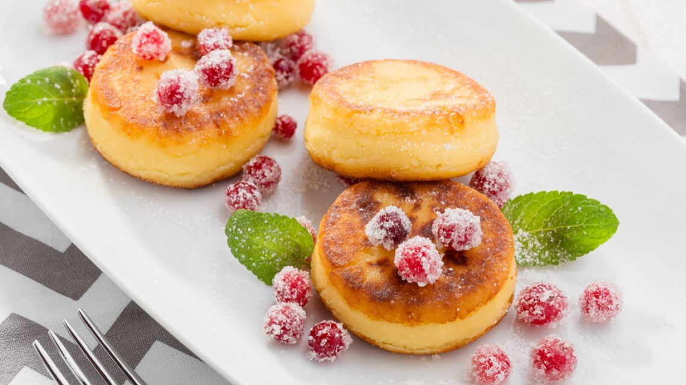

История сырников

Сырники и сырнички являются популярным блюдом восточноевропейской кухни. Их готовят из творога, который смешивают с яйцами и небольшим количеством муки. А ещё их лучшие друзья блины и блинчики.
Многие семьи готовят сырники по своим собственным рецептам, передавая их из поколения в поколение.